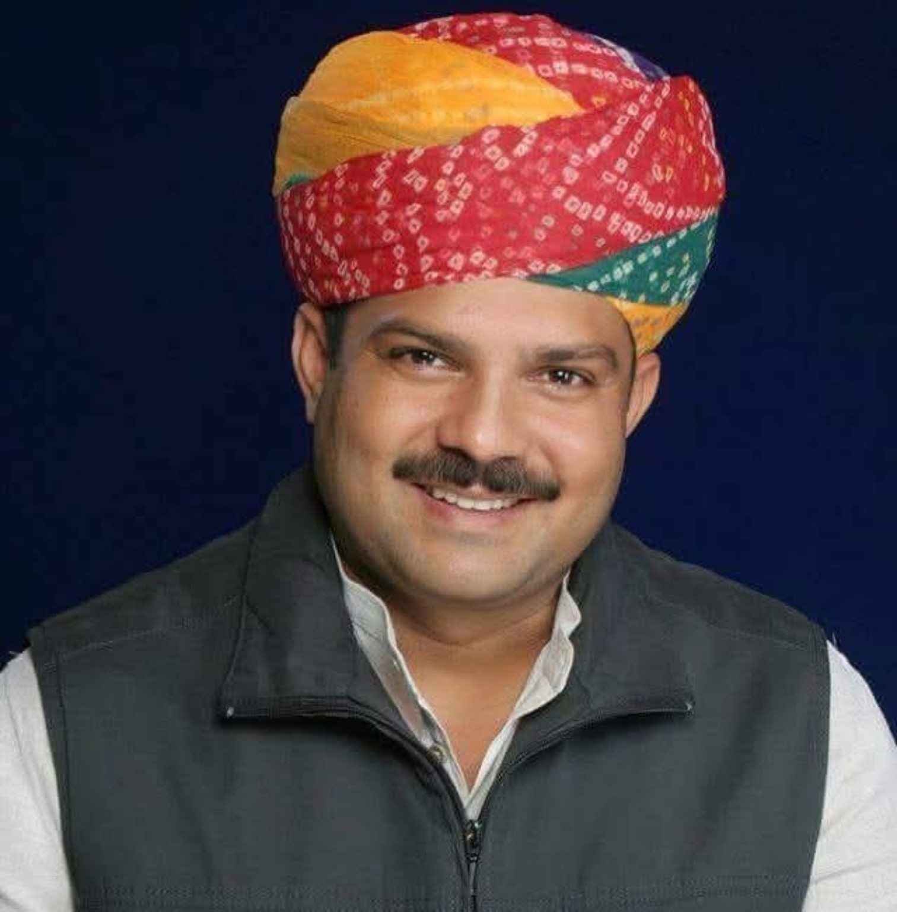
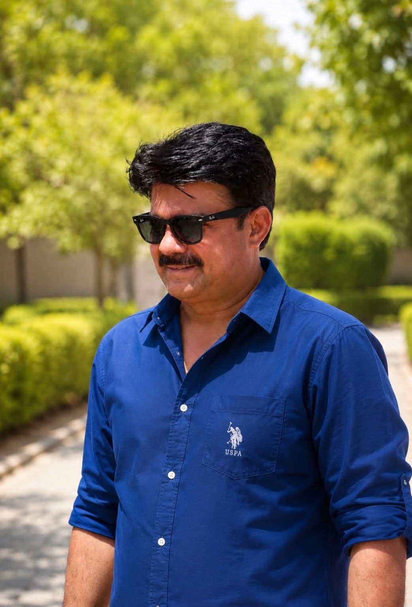
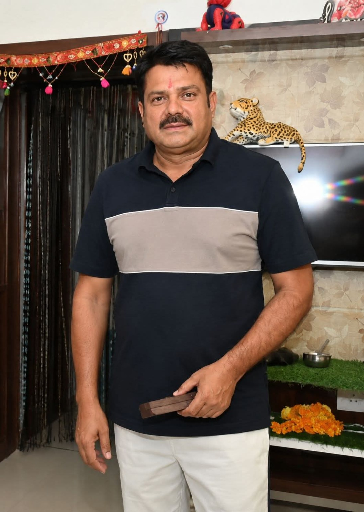
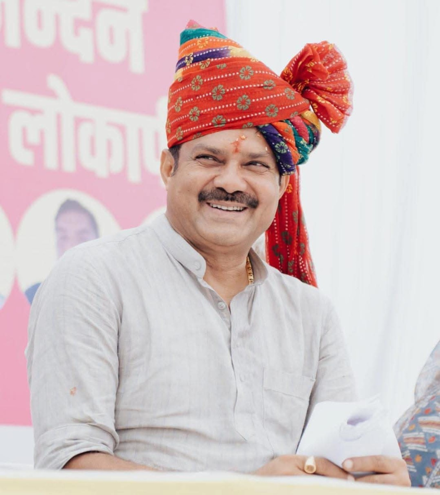
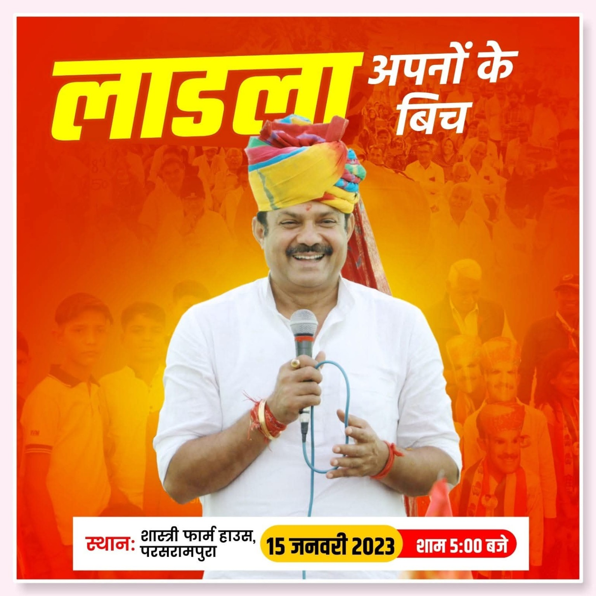
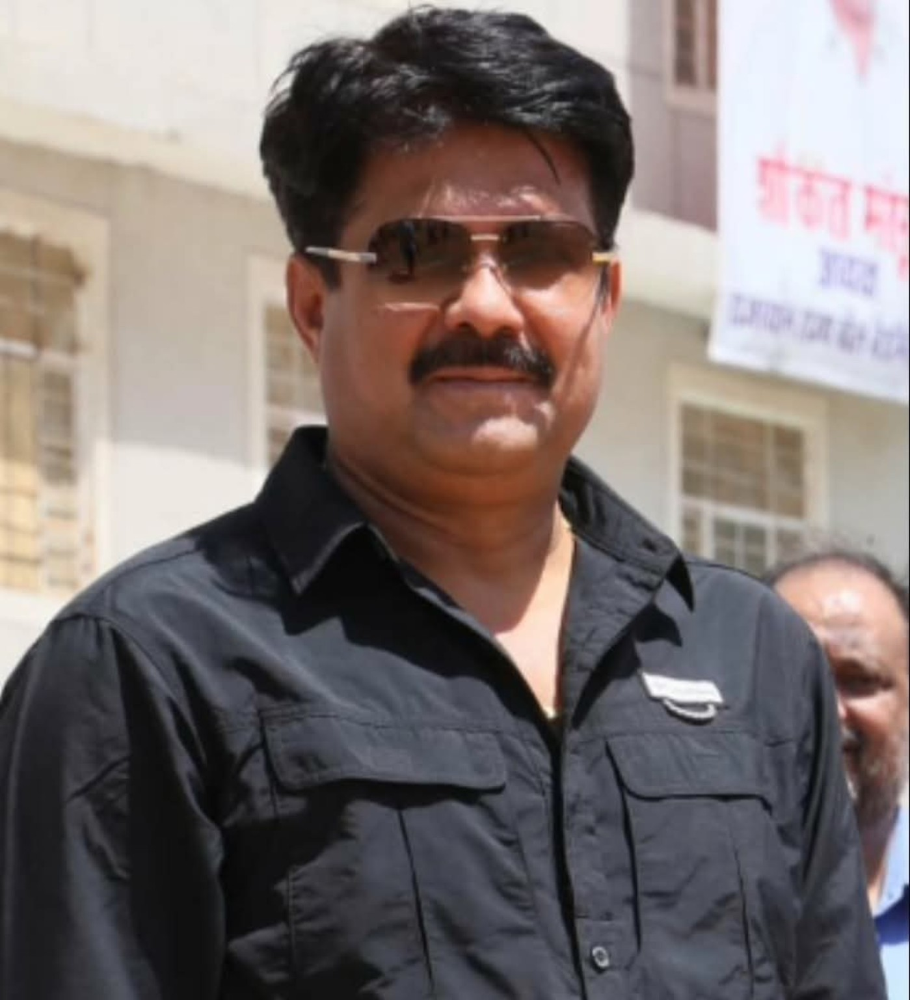
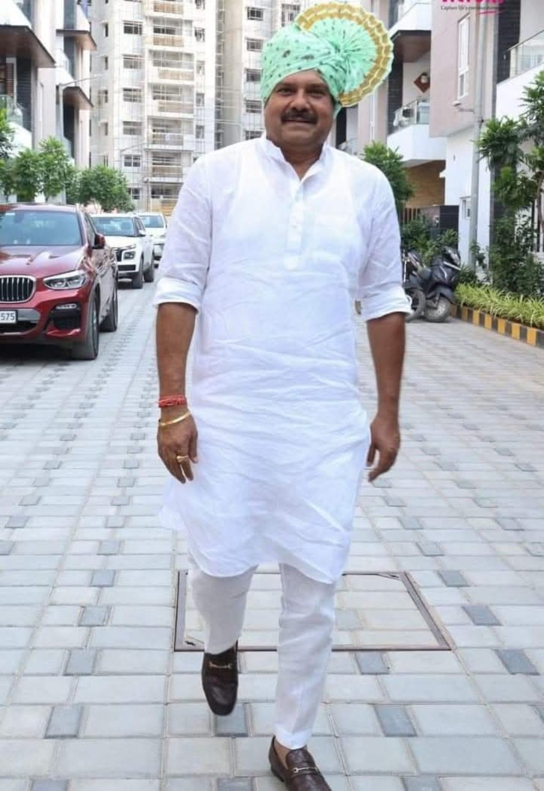
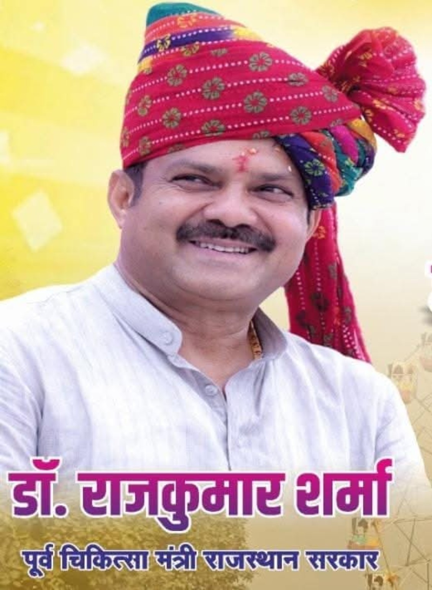
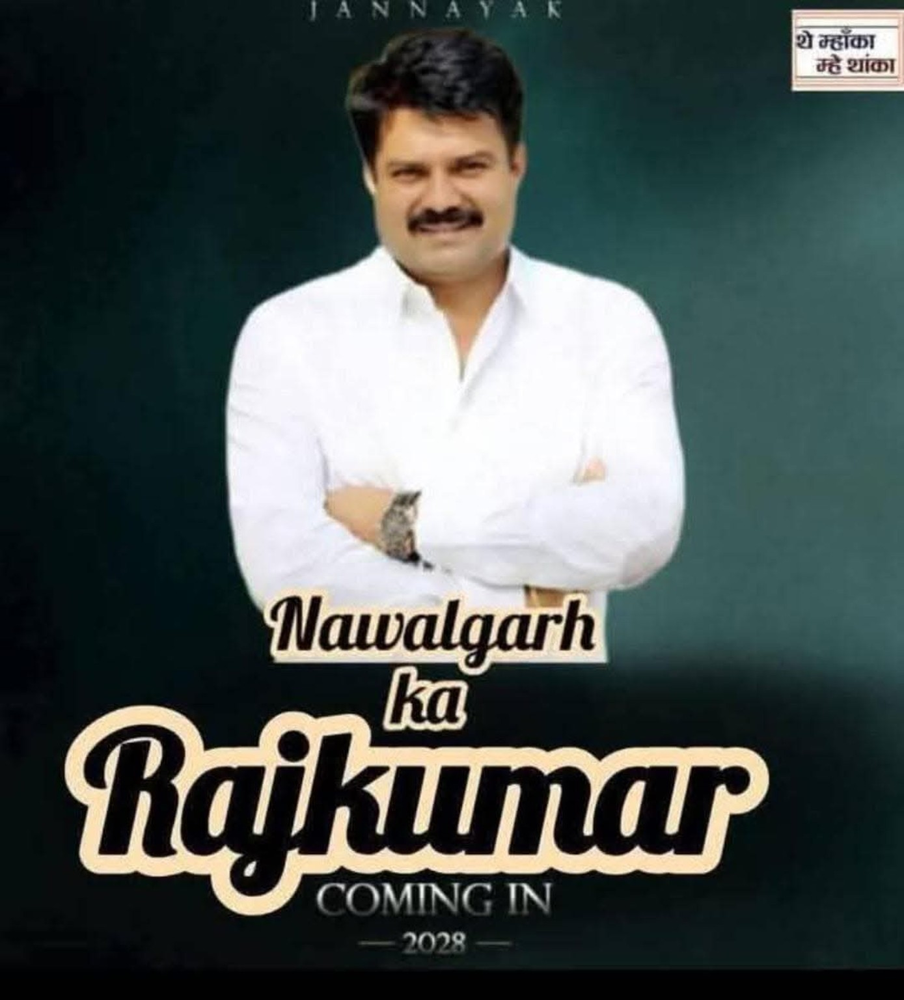
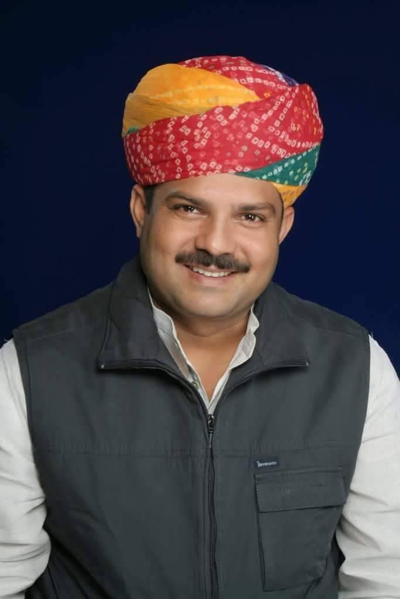

जनता से जुड़ाव, क्षेत्र के विकास और जनहित के कार्यों से संबंधित जानकारी, तस्वीरें, कार्यक्रम और अपडेट एक ही स्थान पर।
फोटो गैलरी वीडियो देखें
शिक्षा और सामाजिक जागरूकता को क्षेत्र के विकास की मजबूत नींव मानते हुए जनहित के विषयों पर निरंतर सक्रियता।
नवलगढ़ क्षेत्र की जनता की समस्याओं, आवश्यकताओं और विकास से जुड़े मुद्दों को प्राथमिकता।
जनता के बीच रहकर संवाद, कार्यक्रमों में भागीदारी और क्षेत्र की समस्याओं से सीधा जुड़ाव।
नवलगढ़ विधानसभा क्षेत्र से जनप्रतिनिधित्व की महत्वपूर्ण शुरुआत।
सार्वजनिक एवं राजनीतिक जीवन में आगे की यात्रा।
क्षेत्र की जनता के साथ जनसंपर्क और विकास कार्यों की निरंतरता।
नवलगढ़ के विकास एवं जनहित के मुद्दों पर सक्रिय भूमिका।
चिकित्सा एवं स्वास्थ्य क्षेत्र से जुड़ी जिम्मेदारियों का निर्वहन।
क्षेत्र में बेहतर चिकित्सा एवं स्वास्थ्य सेवाओं के विस्तार की दिशा में प्रयास।
उच्च शिक्षा एवं विद्यार्थियों के लिए शैक्षणिक सुविधाओं के विकास पर जोर।
जनता को सरकारी सेवाएँ अधिक सुविधाजनक रूप से उपलब्ध कराने की दिशा में कार्य।
क्षेत्र की कनेक्टिविटी एवं सार्वजनिक परिवहन सुविधाओं को बेहतर बनाने के प्रयास।
युवाओं और खिलाड़ियों के लिए खेल संबंधी आधारभूत सुविधाओं को बढ़ावा।
सड़क, सार्वजनिक भवन एवं अन्य बुनियादी सुविधाओं के विकास से जुड़े प्रयास।









क्षेत्र और जनहित से संबंधित नवीनतम समाचार यहाँ प्रकाशित किए जा सकते हैं।
आगामी जनसंपर्क कार्यक्रम, बैठक एवं अन्य आयोजनों की जानकारी।
महत्वपूर्ण वक्तव्य, प्रेस नोट और सार्वजनिक सूचनाएँ यहाँ उपलब्ध होंगी।
जनसेवा • विकास • नवलगढ़
जनता से संवाद और क्षेत्र के विकास से जुड़ी जानकारी के लिए इस वेबसाइट पर नवीनतम अपडेट उपलब्ध रहेंगे।